De la construirea unei figuri și alegerea unui tip de grafic la explorarea distribuțiilor, corelațiilor și curbelor de învățare. Exemple Python explicate, imagini generate local și aplicații în inteligența artificială.
Un grafic nu este doar o imagine atractivă: este o metodă de explorare, verificare și comunicare a proprietăților datelor.
În pregătirea pentru ONIA, vizualizarea apare la explorarea datelor înainte de antrenare (exploratory data analysis, EDA), la compararea claselor, la monitorizarea funcției de pierdere și la interpretarea predicțiilor. Python folosește frecvent Matplotlib pentru controlul detaliat al figurilor și Seaborn pentru reprezentări statistice bazate pe tabele Pandas.
plotscatterbarhistboxplotheatmapÎnțelegerea structurii unei figuri face codul mai ușor de extins la mai multe grafice.
Figure este întreaga suprafață a imaginii; un obiect Axes reprezintă regiunea în care desenăm un grafic și deține axele, etichetele, legenda și titlul. pyplot este o interfață convenabilă importată uzual ca plt.
import matplotlib.pyplot as plt x = [1, 2, 3, 4, 5] y = [2, 4, 3, 7, 8] fig, ax = plt.subplots(figsize=(7, 4)) ax.plot(x, y, marker="o", label="Scor") ax.set_title("Evoluția scorului") ax.set_xlabel("Epocă") ax.set_ylabel("Scor") ax.grid(alpha=0.3) ax.legend() plt.show()
Metoda fig, ax = plt.subplots() este recomandată pentru majoritatea exercițiilor: obiectul ax indică explicit unde ajunge fiecare element. Varianta scurtă plt.plot(...) este utilă pentru demonstrații simple, dar devine mai dificil de gestionat în proiecte mari.
O linie conectează observații într-o ordine semnificativă: timp, epoci, iterații ori valori ale unui parametru.
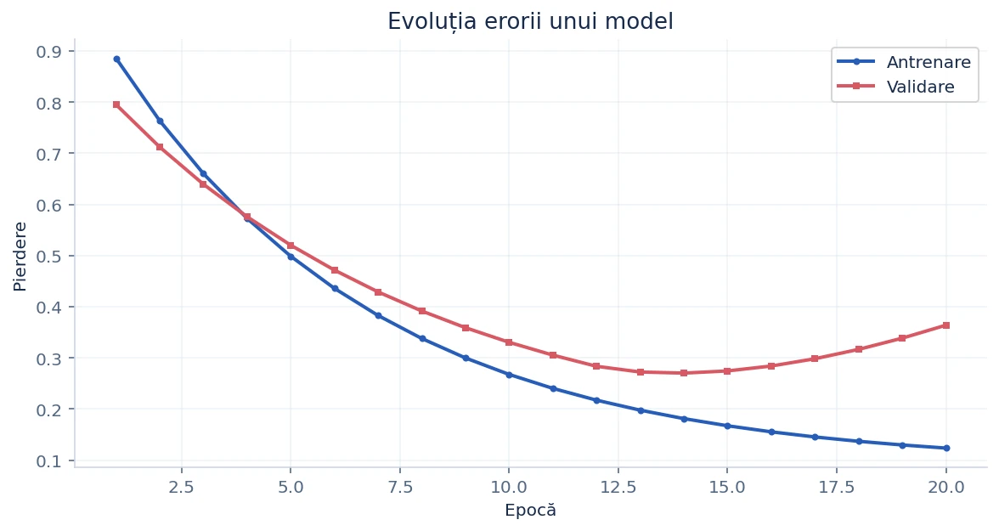
import numpy as np import matplotlib.pyplot as plt epoci = np.arange(1, 21) pierdere_train = 0.94 * np.exp(-epoci / 6) + 0.09 pierdere_valid = (0.76 * np.exp(-epoci / 7.5) + 0.13 + np.maximum(epoci - 12, 0)**1.5 * 0.008) fig, ax = plt.subplots(figsize=(8, 4)) ax.plot(epoci, pierdere_train, label="Antrenare", marker="o") ax.plot(epoci, pierdere_valid, label="Validare", marker="s") ax.set(xlabel="Epocă", ylabel="Pierdere", title="Curbe de învățare") ax.legend() ax.grid(alpha=0.3) plt.show()
Fiecare punct reprezintă o observație; spre deosebire de linie, punctele nu sunt conectate automat.
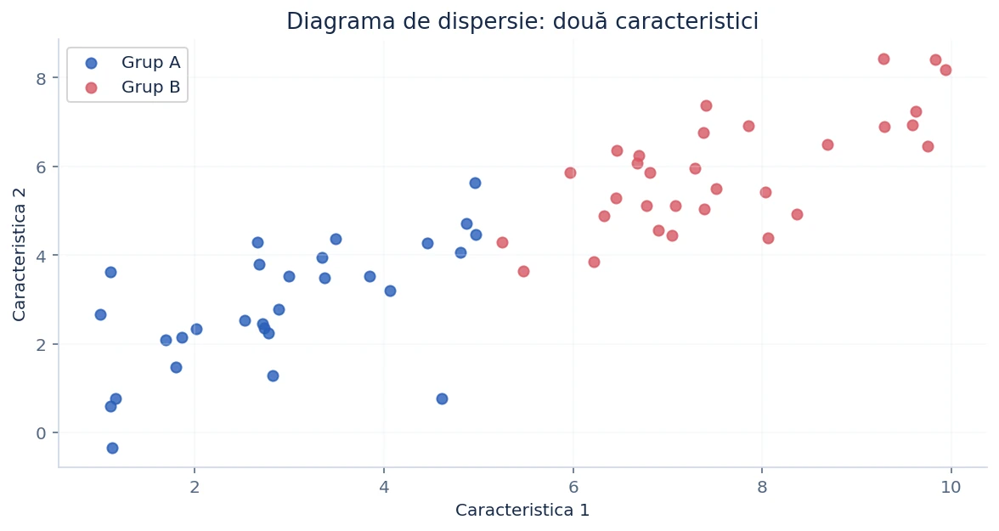
import numpy as np import matplotlib.pyplot as plt rng = np.random.default_rng(21) x = rng.uniform(1, 10, 60) y = 0.65 * x + 1 + rng.normal(0, 1.1, 60) fig, ax = plt.subplots() ax.scatter(x, y, alpha=0.8, s=45) ax.set(xlabel="Caracteristica X", ylabel="Caracteristica Y") plt.show()
Argumentul alpha controlează transparența, s mărimea punctelor, iar c culoarea. În clasificare, colorarea punctelor după etichetă poate evidenția clase separate sau suprapuse.
Graficele cu bare sunt potrivite pentru cantități asociate unor categorii discrete.
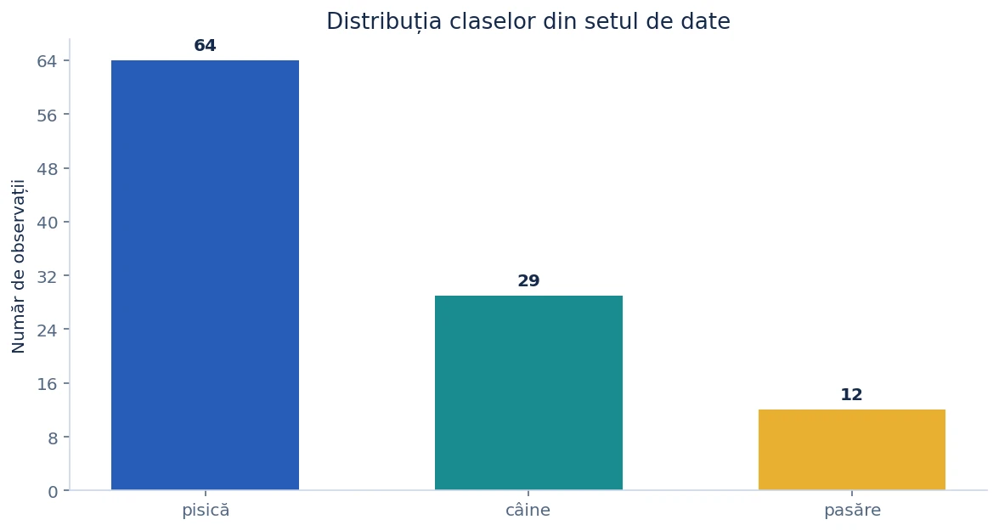
import matplotlib.pyplot as plt etichete = ["pisică", "câine", "pasăre"] frecvente = [64, 29, 12] fig, ax = plt.subplots() ax.bar(etichete, frecvente) ax.set(title="Distribuția claselor", ylabel="Număr exemple") plt.show()
În IA, un set de date dezechilibrat poate necesita atenție la alegerea metricilor de evaluare și la împărțirea în loturi. Nu confunda barele (categorii) cu histograma (valori numerice grupate în intervale).
O histogramă grupează valori numerice în intervale (<em>bins</em>) și arată câte observații apar în fiecare interval.
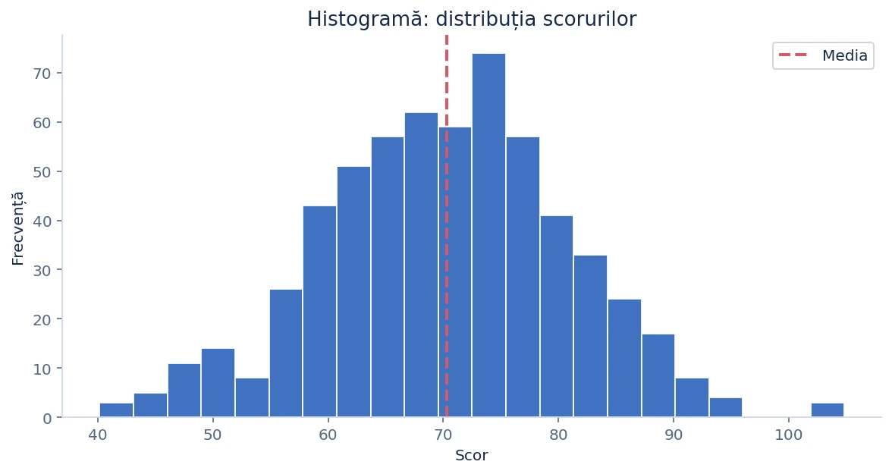
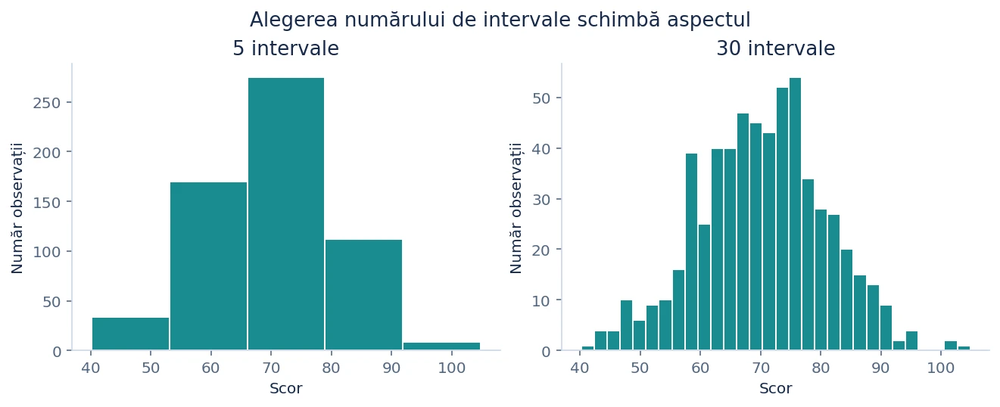
import numpy as np import matplotlib.pyplot as plt rng = np.random.default_rng(21) scoruri = rng.normal(loc=70, scale=11, size=600) fig, ax = plt.subplots() ax.hist(scoruri, bins=20, edgecolor="white") ax.axvline(scoruri.mean(), color="crimson", linestyle="--", label="Media") ax.set(xlabel="Scor", ylabel="Frecvență") ax.legend() plt.show()
Numărul de intervale influențează rezoluția: prea puține pot ascunde forme interesante; prea multe pot transforma distribuția într-un desen zgomotos. Pentru comparații între seturi de dimensiuni diferite, analizează și opțiunea density=True.
Media singură nu explică dispersia scorurilor; reprezentările distribuțiilor arată unde se concentrează observațiile.
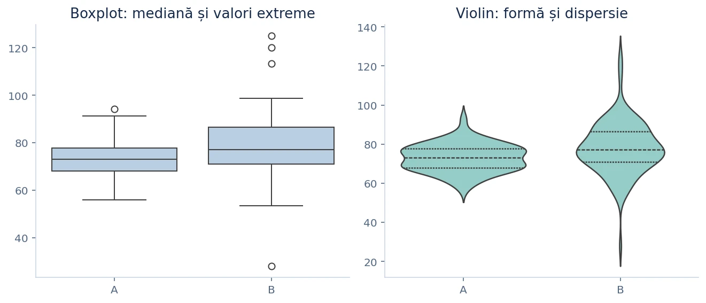
În boxplot, linia din dreptunghi reprezintă mediana; cutia acoperă intervalul dintre quartilele Q1 și Q3. Mustățile reprezintă de obicei valorile din limita de 1,5 × IQR, iar punctele externe sunt candidați pentru valori atipice, nu neapărat erori. Un violinplot adaugă distribuția estimată a densității.
import seaborn as sns import pandas as pd import matplotlib.pyplot as plt scoruri = pd.DataFrame({ "Model A": [0.74, 0.80, 0.79, 0.82, 0.85, 0.76], "Model B": [0.67, 0.78, 0.86, 0.88, 0.91, 0.92] }) fig, ax = plt.subplots() sns.boxplot(data=scoruri, ax=ax) ax.set(ylabel="Acuratețe", title="Dispersia scorurilor") plt.show()
Subplot-urile permit comparații fără a suprapune serii care măsoară lucruri diferite.
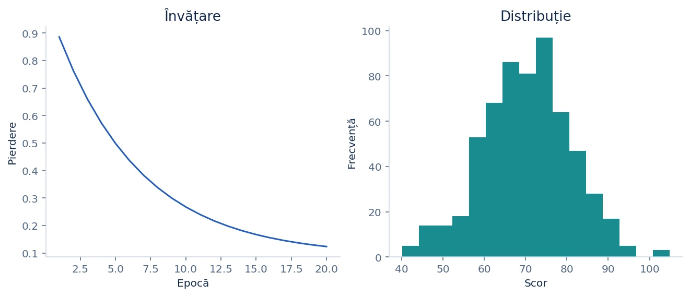
import numpy as np import matplotlib.pyplot as plt x = np.arange(1, 11) y = 1 / np.sqrt(x) fig, axs = plt.subplots(1, 2, figsize=(9, 4), constrained_layout=True) axs[0].plot(x, y) axs[0].set(title="Evoluție", xlabel="Pas", ylabel="Eroare") axs[1].hist(y, bins=5) axs[1].set(title="Distribuție", xlabel="Eroare") plt.show()
Argumentele sharex=True și sharey=True fac posibilă compararea pe aceeași scară. constrained_layout=True reduce suprapunerile dintre elemente.
Un grafic corect trebuie să poată fi interpretat fără să inspectăm codul care l-a generat.
import matplotlib.pyplot as plt fig, ax = plt.subplots(figsize=(7, 4), constrained_layout=True) ax.plot([1, 2, 3, 4], [0.9, 0.7, 0.5, 0.35], marker="o", label="Pierdere") ax.set(title="Învățarea modelului", xlabel="Epocă", ylabel="Funcția de pierdere") ax.annotate("Minim", xy=(4, 0.35), xytext=(2.7, 0.45), arrowprops={"arrowstyle": "->"}) ax.legend() ax.grid(alpha=0.25) fig.savefig("curba_invatarii.png", dpi=180, bbox_inches="tight") plt.show()
fig.savefig(...) pentru PNG/SVG/PDF; dpi controlează rezoluția exportului raster.Seaborn pornește de la Matplotlib, dar simplifică maparea coloanelor unui DataFrame la axele și caracteristicile vizuale ale graficului.
Convenția uzuală este import seaborn as sns. În funcțiile Seaborn, data primește un DataFrame, x și y numele coloanelor, iar hue poate reprezenta o categorie prin culoare. Funcțiile la nivel de axes (de exemplu sns.scatterplot) acceptă ax=; funcțiile la nivel de figure (precum sns.relplot) creează propriile figuri.
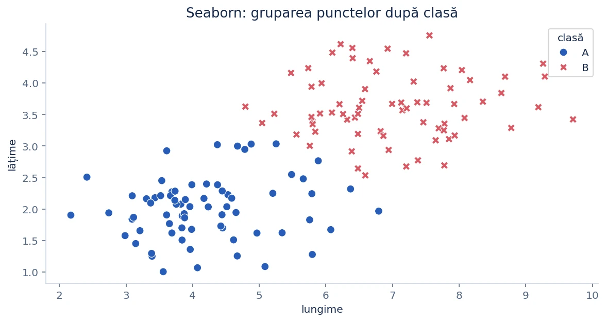
import pandas as pd import seaborn as sns import matplotlib.pyplot as plt observatii = pd.DataFrame({ "lungime": [2.2, 2.8, 3.1, 6.1, 6.8, 7.3], "latime": [1.0, 1.4, 1.3, 3.2, 3.7, 3.5], "clasa": ["A", "A", "A", "B", "B", "B"] }) fig, ax = plt.subplots() sns.scatterplot(data=observatii, x="lungime", y="latime", hue="clasa", style="clasa", s=90, ax=ax) ax.set_title("Caracteristici pe clase") plt.show()
Seaborn adaugă opțiuni rapide pentru estimarea și compararea distribuțiilor.
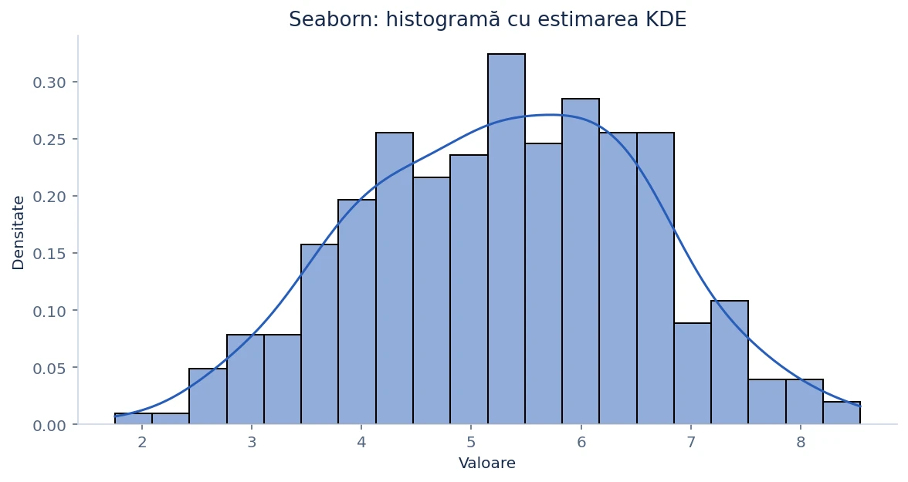
import numpy as np import seaborn as sns import matplotlib.pyplot as plt rng = np.random.default_rng(42) valori = rng.normal(5.2, 1.35, 300) fig, ax = plt.subplots() sns.histplot(x=valori, bins=20, stat="density", kde=True, color="steelblue", ax=ax) ax.set(xlabel="Valoare", ylabel="Densitate") plt.show()
Graficele de categorii pot arăta atât numărul de observații, cât și o statistică agregată pentru fiecare grup.
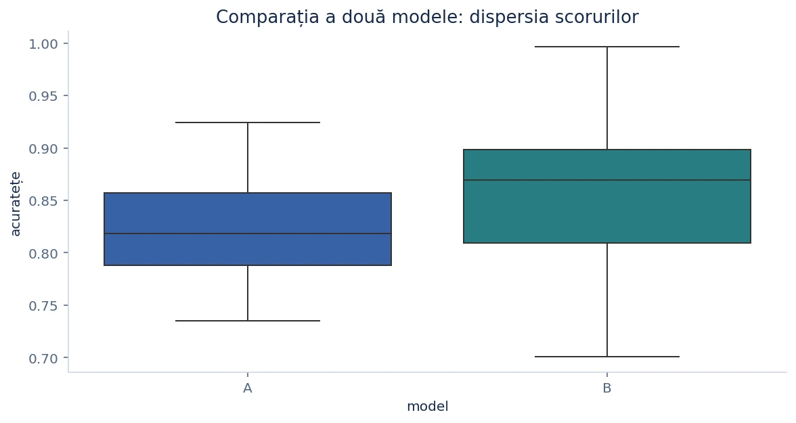
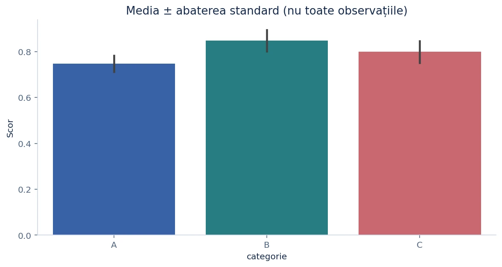
import pandas as pd import seaborn as sns import matplotlib.pyplot as plt date = pd.DataFrame({ "metoda": ["A", "A", "A", "B", "B", "B"], "scor": [0.76, 0.79, 0.81, 0.82, 0.86, 0.89] }) fig, axs = plt.subplots(1, 2, figsize=(9, 4)) sns.countplot(data=date, x="metoda", color="steelblue", ax=axs[0]) sns.barplot(data=date, x="metoda", y="scor", errorbar="sd", color="teal", ax=axs[1]) axs[0].set_title("Număr exemple") axs[1].set_title("Media și abaterea standard") plt.tight_layout() plt.show()
errorbar="sd" reprezintă abaterea standard; implicit, barplot poate afișa un interval de încredere pentru estimarea mediei. Nu confunda aceste cantități.O matrice de diagrame scatter arată rapid perechile de caracteristici și distribuțiile marginale.
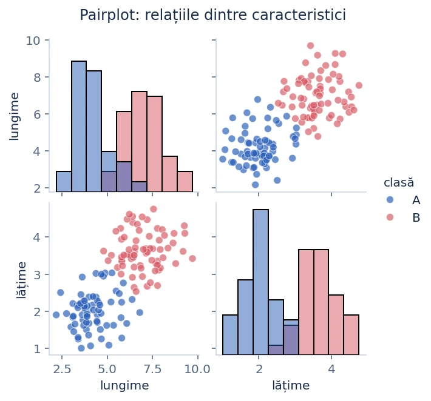
import pandas as pd import seaborn as sns import matplotlib.pyplot as plt date = pd.DataFrame({ "inaltime": [150, 155, 160, 175, 180, 185], "greutate": [45, 49, 52, 67, 72, 78], "grupa": ["A", "A", "A", "B", "B", "B"] }) g = sns.pairplot(data=date, vars=["inaltime", "greutate"], hue="grupa", diag_kind="hist") g.fig.suptitle("Relațiile dintre caracteristici", y=1.03) plt.show()
Un pairplot devine greu de citit când numărul caracteristicilor este foarte mare. Selectează un subset relevant, mai ales în proiectele cu sute de atribute.
O hartă termică codifică valori numerice prin culori; este deosebit de utilă pentru analiza corelațiilor dintre caracteristici.
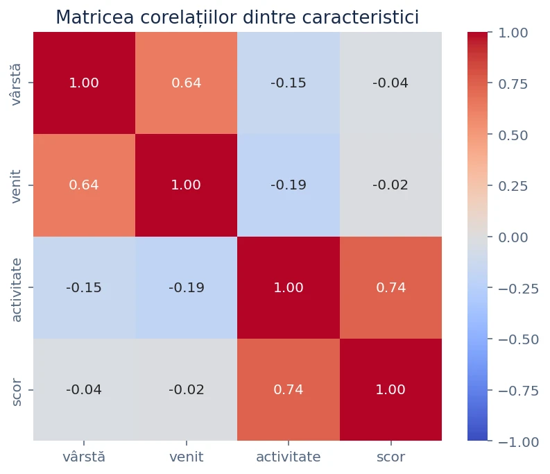
import numpy as np import pandas as pd import seaborn as sns import matplotlib.pyplot as plt rng = np.random.default_rng(4) x = rng.normal(size=100) date = pd.DataFrame({ "X": x, "Y": 0.8 * x + rng.normal(scale=0.4, size=100), "Z": rng.normal(size=100) }) fig, ax = plt.subplots() sns.heatmap(date.corr(), annot=True, fmt=".2f", cmap="coolwarm", center=0, vmin=-1, vmax=1, ax=ax) plt.show()
Împărțirea setului de date în panouri separate este utilă când aceeași relație trebuie comparată între categorii.
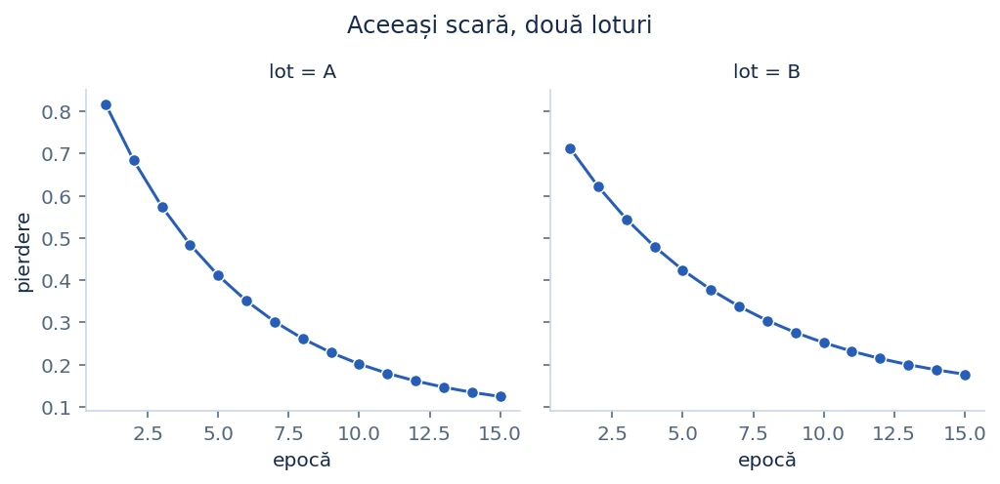
import pandas as pd import seaborn as sns import matplotlib.pyplot as plt date = pd.DataFrame({ "epoca": [1, 2, 3, 4] * 2, "pierdere": [.9, .6, .4, .3, .8, .7, .65, .56], "lot": ["A"] * 4 + ["B"] * 4 }) g = sns.relplot(data=date, x="epoca", y="pierdere", col="lot", kind="line", marker="o", facet_kws={"sharey": True}) plt.show()
Când mii de puncte se suprapun, un scatter obișnuit ascunde densitățile locale.
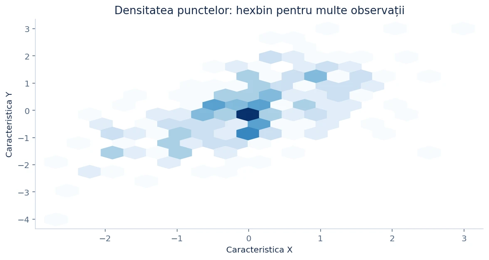
import numpy as np import matplotlib.pyplot as plt rng = np.random.default_rng(21) puncte = rng.multivariate_normal([0, 0], [[1, 0.7], [0.7, 1]], size=2500) fig, ax = plt.subplots() rez = ax.hexbin(puncte[:, 0], puncte[:, 1], gridsize=30, mincnt=1, cmap="Blues") fig.colorbar(rez, ax=ax, label="Număr de puncte") ax.set(xlabel="X", ylabel="Y", title="Densitate hexagonală") plt.show()
Înainte de un model de învățare automată, verifică distribuțiile, clasele și relațiile dintre caracteristici.
Descarcă setul demonstrativ observatii_viz.csv. Un flux rezonabil: (1) citește un CSV în Pandas; (2) verifică shape, head() și valorile lipsă; (3) reprezintă numărul exemplelor pe clasă; (4) inspectează histogramele caracteristicilor numerice; (5) compară perechi de caracteristici și corelații; (6) notează observații, nu doar grafice.
import pandas as pd import seaborn as sns import matplotlib.pyplot as plt # Modifică numele coloanei-țintă după setul tău de date. df = pd.read_csv("datasets/observatii_viz.csv") print(df.shape) print(df.isna().sum()) fig, axs = plt.subplots(1, 2, figsize=(10, 4)) sns.countplot(data=df, x="eticheta", color="steelblue", ax=axs[0]) sns.histplot(data=df, x="scor", bins=20, color="teal", ax=axs[1]) plt.tight_layout() plt.show()
Graficele trebuie să fie corecte, lizibile și reproductibile.
sns.barplot pentru a număra exemple dacă ai nevoie de countplot — primul agregă valori numerice.np.random.default_rng(seed) pentru simulări, export local pentru rezultate.plt.close(fig) când generezi multe figuri într-un script, pentru a evita acumularea acestora în memorie.Rezumat: Matplotlib oferă control fin prin obiectele Figure/Axes; Seaborn simplifică statisticile vizuale bazate pe DataFrame. Scopul nu este reproducerea mecanică a unor comenzi, ci selectarea graficului potrivit pentru o întrebare de analiză.
Referințe bibliografice folosite la documentare: „introduction-to-matplotlib”, „04.14-Visualization-With-Seaborn” și „matplotlib-exercises”. Graficele din lecție reprezintă date sintetice și sunt incluse în proiect; nu reprezintă rezultate reale de model.
Am selectat două tutoriale explicative și un caiet de exerciții. Poți consulta notebookurile originale prin legăturile către proiectele autorilor de sub lecție. Exemplele explicate aici pot fi rulate în JupyterLab.